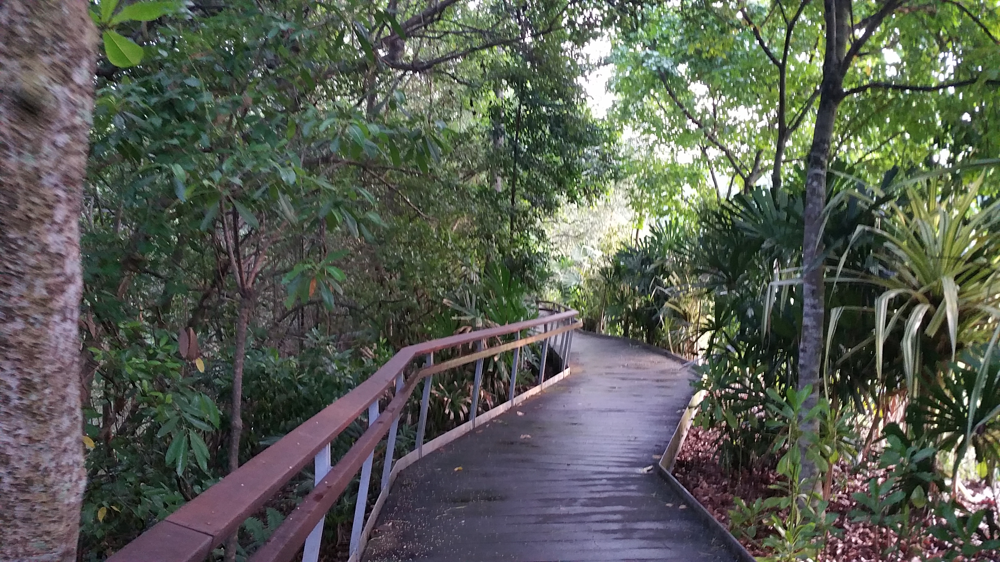
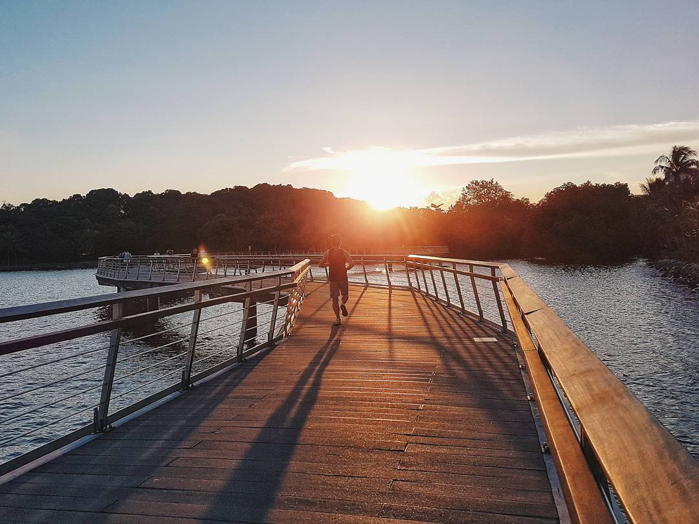

Located next to Labrador MRT, Berlayer Creek is home to a beautiful mangrove forest that leads to the coasts of Labrador Park.
The boardwalk is popular with residents who are often seen jogging there, and if you are lucky you may cross paths with dog walkers bringing various breeds of dogs out for a walk!
Berlayer Creek Boardwalk
Stretching the length of the creek is the mangrove boardwalk. Spaced throughout the boardwalk are lookout points where you can enjoy a view of the mangrove forest and the creek. If you are lucky, the otters might be there frolicking in the waters.
On good days, I have encountered the Asian Water Monitor(Varanus salvator), White-collared Kingfishers (Todiramphus chloris) and the Pink-necked Green Pigeon (Treron vernans). These species are common residents of the mangrove forests and I can spend hours watching them forage for food or perched on the branches snuggling together.
Bukit Chermin Boardwalk
At the end of the Berlayer Creek boardwalk, we have the choice to head to the Bukit Chermin boardwalk or Labrador Nature Reserve. Turning left, I walk over to the boardwalk at low tide, admiring the biodiversity of the intertidal mudflats of Labrador Beach.
Using my binoculars, I look out for small metallic crabs clawing their way on rocks and roots, hermit crabs clambering around in shells of various shapes and sizes, and upon the gasps of fellow park-goers, look up and see the Brahminy Kite (Haliastar indus) soaring above the mudflats. Who knows, perhaps the kite was looking at us too?